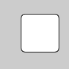
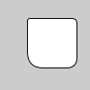

| Name | rect |
||||||||||||||||||
|---|---|---|---|---|---|---|---|---|---|---|---|---|---|---|---|---|---|---|---|
| Examples |

processing$rect(30, 20, 55, 55, 7) 
processing$rect(30, 20, 55, 55) 
processing$rect(30, 20, 55, 55, 3, 6, 12, 18) | ||||||||||||||||||
| Description |
Draws a rectangle to the screen. A rectangle is a four-sided shape with every angle at ninety degrees. By default, the first two parameters set the location of the upper-left corner, the third sets the width, and the fourth sets the height. The way these parameters are interpreted, however, may be changed with the rectMode() function. To draw a rounded rectangle, add a fifth parameter, which is used as the radius value for all four corners. To use a different radius value for each corner, include eight parameters. When using eight parameters, the latter four set the radius of the arc at each corner separately, starting with the top-left corner and moving clockwise around the rectangle. |
||||||||||||||||||
| Syntax | rect( | ||||||||||||||||||
| Parameters |
| ||||||||||||||||||
| Related |
rectMode quad |